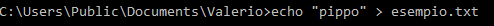
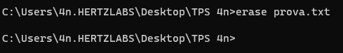

ECHO
Visualizza messaggi o attiva e disattiva la ripetizione a video dei comandi.
 ENDLOCAL
Termina la localizzazione di modifiche di ambiente in un file batch.

ERASE
Elimina uno o più file.
 EXIT
Termina il programma CMD.EXE (interprete dei comandi).